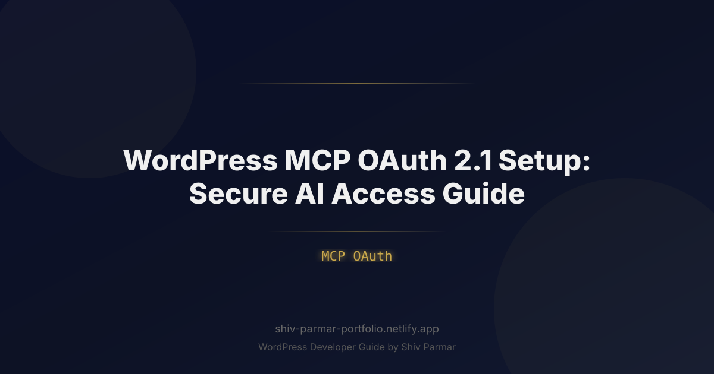

WordPress MCP OAuth 2.1 Setup: Secure AI Access Guide
Table of Contents
The convergence of generative AI and enterprise content management has introduced a major operational paradigm: autonomous and semi-autonomous AI agents executing tasks directly against production CMS backends. Through Anthropic’s open-standard Model Context Protocol (MCP), LLMs such as Claude, ChatGPT, and custom IDE copilots can query, create, update, and audit WordPress content in real time. However, granting external agents programmatic entry to your digital presence exposes an attack surface that legacy authentication methods cannot securely manage.
Historically, WordPress developers relied on Application Passwords or basic API keys for headless integrations. In an agentic environment where AI models act autonomously and tool definitions can be dynamically executed, long-lived static credentials represent an unacceptable security liability. A single leaked token or prompt injection exploit could hand full administrative control of your core database to an untrusted actor.
To establish safe, auditable, and resilient AI access, organizations must modernize their identity layer. This guide details how to implement a production-grade WordPress MCP OAuth 2.1 pipeline. By enforcing PKCE (Proof Key for Code Exchange), deprecating brittle legacy flows, and mapping strict granular scopes to WordPress user capabilities, you can safely empower intelligent systems while keeping your WordPress security perimeter fully defended.
What is WordPress MCP OAuth 2.1?
The Model Context Protocol (MCP) is an open standard designed to standardize how AI applications share context and expose tools to external systems. When an AI client communicates with WordPress via MCP, it relies on an MCP server that translates high-level model requests (e.g., "Analyze our draft queue and summarize articles tagged 'Cybersecurity'") into structured WordPress REST API calls.
OAuth 2.1 is the consolidated, hardened evolution of the OAuth 2.0 authorization framework. It strips away vulnerable legacy patterns—such as the Implicit Grant and Resource Owner Password Credentials Grant—while mandating contemporary defense-in-depth requirements across the board. Integrating OAuth 2.1 with WordPress and an MCP server ensures that every interaction between the AI client and your CMS is authenticated, authorized, and continuously verified.
| Feature / Specification | Application Passwords | Standard OAuth 2.0 | OAuth 2.1 (MCP Standard) |
|---|---|---|---|
| Proof Key for Code Exchange (PKCE) | Unsupported | Optional | Mandatory for All Clients |
| Implicit & Password Grants | N/A (Static Auth) | Allowed | Completely Removed |
| Exact Redirect URI Matching | None | Partial / Wildcards | Strict Exact Matching |
| Scope Granularity | Inherits All User Caps | Configurable | Strictly Scoped per Client |
| Token Lifespan Strategy | Indefinite / Permanent | Variable | Short-Lived Access + Refresh Rotation |
When combined, WordPress, MCP, and OAuth 2.1 create an isolated broker pattern. The AI client never touches raw database credentials or master user passwords. Instead, it holds short-lived tokens bound to verifiable cryptographic signatures, with access rights scoped explicitly to the tools it needs to execute.
Why WordPress MCP OAuth 2.1 Matters in 2026
The nature of web management has pivoted from manual dashboard interactions to autonomous agent workflows. Organizations now use automated pipelines where LLMs summarize analytics, draft responses to consumer inquiries, optimize media assets, and run scheduled SEO audits across tens of thousands of post entities. This evolution introduces novel security risks that traditional access control models cannot mitigate.
The Danger of Prompt Injection and Tool Abuse
In modern agentic architectures, language models process untrusted input—such as user comments, external RSS feeds, or third-party webhooks—and pass derived parameters directly into MCP tools. If an AI agent running under an administrative Application Password encounters an indirect prompt injection attack, the attacker can leverage the model's ambient privileges to wipe tables, install rogue plugins, or extract sensitive user data. OAuth 2.1 mitigates this risk by restricting the issued token to narrow, purpose-built scopes (e.g., posts:read and posts:draft), effectively neutralizing administrative elevation attempts even if the model itself is compromised.
Eliminating the Vulnerabilities of Public Clients
Many modern MCP clients run locally on developer workstations (such as Claude Desktop or local command-line runners) or within distributed cloud containers. These environments are fundamentally public clients that cannot securely store an embedded client_secret. OAuth 2.1 addresses this architectural reality by requiring PKCE across all authorization code transactions. This cryptographic handshake guarantees that authorization codes intercepted in local environments cannot be exchanged for access tokens by malicious actors.
Continuous Compliance and Audit Trails
Modern compliance frameworks—including SOC 2 Type II, ISO 27001, and the EU AI Act—require explicit authorization boundaries and auditable activity logs for automated systems interacting with data platforms. Relying on shared user credentials obscures non-human activity. Implementing an OAuth 2.1 server within WordPress generates discrete authorization records, tracks refresh token rotations, and attributes every MCP action to a specific, revocable application identity.
Step-by-Step Guide: Implementing OAuth 2.1 for WordPress MCP
Configuring a hardened authentication layer between WordPress and an MCP server requires orchestrating three discrete components: the WordPress OAuth 2.1 authorization server, the custom MCP tool layer, and the client token negotiation pipeline. Follow the steps below to configure a secure deployment.
1. Establishing Prerequisites and Environment Requirements
Before modifying authentication routines, ensure your WordPress deployment meets baseline production security criteria:
- Transport Security: Strict HTTPS with TLS 1.3 enforced. OAuth 2.1 forbids unencrypted HTTP communication outside of local loopback environments.
- PHP Runtime: PHP 8.2 or later with the
opensslandsodiumextensions active for asymmetric cryptographic validation. - REST API Enabled: Core WordPress REST API enabled without generic blocking filters on the index route (
/wp-json/). - Server Plugin or Provider: Install an RFC-compliant OAuth 2.1 / OpenID Connect server provider (e.g., Miniorange OAuth Server Enterprise, WP OAuth Server with modern add-ons, or a custom OAuth 2.1 framework bridge).
2. Defining Granular Scopes and Capabilities
Do not allow your AI agents to run under broad roles like administrator or editor. Create dedicated scopes that explicitly control the operations an MCP agent can execute. Add the following hook to your custom infrastructure plugin or theme functions.php to register granular scopes and map them to standard WordPress capabilities:
<?php
declare(strict_types=1);
namespace SecureCMS\AI\Authentication;
/**
* Register fine-grained scopes compatible with OAuth 2.1 and MCP Server tools.
*/
add_filter('oauth2_server_available_scopes', function (array $scopes): array {
return array_merge($scopes, [
'mcp:read_content' => __('Read posts, pages, and custom post types.', 'secure-mcp'),
'mcp:draft_content' => __('Create and update post drafts only.', 'secure-mcp'),
'mcp:manage_media' => __('Upload and inspect media attachments.', 'secure-mcp'),
'mcp:read_analytics' => __('Access internal metrics and revision history.', 'secure-mcp'),
]);
});
/**
* Restrict token-authenticated REST requests based on assigned OAuth scopes.
*/
add_filter('rest_pre_dispatch', function ($result, \WP_REST_Server $server, \WP_REST_Request $request) {
$route = $request->get_route();
$method = $request->get_method();
// Only inspect requests targeting our content pathways
if (strpos($route, '/wp/v2/posts') === 0 && in_array($method, ['POST', 'PUT', 'PATCH'], true)) {
$token_scopes = $request->get_param('oauth_token_scopes') ?? [];
// Ensure current token has draft creation authorization
if (!in_array('mcp:draft_content', (array) $token_scopes, true)) {
return new \WP_Error(
'rest_forbidden_scope',
__('Token lacks the required mcp:draft_content scope.', 'secure-mcp'),
['status' => 403]
);
}
// Force publication status to always remain 'draft' for AI agents
if ($request->get_param('status') === 'publish') {
$request->set_param('status', 'draft');
}
}
return $result;
}, 10, 3);
3. Client Registration and PKCE Enforcement
Register your MCP client in the WordPress OAuth administration dashboard using the Authorization Code Grant. When configuring the client:
- Set Client Type to
Public(for local MCP tools like Claude Desktop) orConfidential(for isolated, containerized MCP servers running on a trusted backend). - Input the exact Redirect URI (e.g.,
http://127.0.0.1:40404/callbackorhttps://ai-broker.internal/oauth/callback). Wildcards and path variations are rejected by OAuth 2.1. - Set PKCE Enforcement to
RequiredusingS256(SHA-256) as the mandatory code challenge method. Reject plain-text challenge fallbacks. - Assign the precise scopes defined in Step 2 (e.g.,
mcp:read_content mcp:draft_content).
4. Building the Node.js MCP Server with PKCE Support
Below is a production-ready Node.js/TypeScript MCP Server structure that implements the OAuth 2.1 Authorization Code Grant with PKCE. The server registers an MCP tool to fetch drafts safely, maintaining its own authenticated session with the WordPress instance.
import { Server } from "@modelcontextprotocol/sdk/server/index.js";
import { StdioServerTransport } from "@modelcontextprotocol/sdk/server/stdio.js";
import { CallToolRequestSchema, ListToolsRequestSchema } from "@modelcontextprotocol/sdk/types.js";
import crypto from "node:crypto";
import axios from "axios";
// Environment Configuration
const WP_BASE_URL = process.env.WP_BASE_URL || "https://example.com";
const CLIENT_ID = process.env.WP_MCP_CLIENT_ID || "wp-mcp-agent-id";
const REDIRECT_URI = "http://127.0.0.1:40404/callback";
let currentAccessToken: string | null = null;
let currentRefreshToken: string | null = null;
/**
* Generate cryptographic PKCE parameters
*/
function generatePKCE() {
const codeVerifier = crypto.randomBytes(32).toString('base64url');
const codeChallenge = crypto
.createHash('sha256')
.update(codeVerifier)
.digest('base64url');
return { codeVerifier, codeChallenge };
}
/**
* Exchange Authorization Code for Tokens
*/
async function exchangeCodeForToken(code: string, codeVerifier: string) {
const tokenEndpoint = `${WP_BASE_URL}/wp-json/oauth2/token`;
const response = await axios.post(tokenEndpoint, new URLSearchParams({
grant_type: 'authorization_code',
client_id: CLIENT_ID,
code: code,
redirect_uri: REDIRECT_URI,
code_verifier: codeVerifier, // Validated against the stored S256 challenge
}), {
headers: { 'Content-Type': 'application/x-www-form-urlencoded' }
});
currentAccessToken = response.data.access_token;
currentRefreshToken = response.data.refresh_token;
return response.data;
}
/**
* Initialize the MCP Server Instance
*/
const mcpServer = new Server(
{ name: "wordpress-secure-mcp", version: "1.0.0" },
{ capabilities: { tools: {} } }
);
// Register Available Tools
mcpServer.setRequestHandler(ListToolsRequestSchema, async () => {
return {
tools: [
{
name: "get_draft_posts",
description: "Fetch a list of draft posts for editorial evaluation.",
inputSchema: {
type: "object",
properties: {
per_page: { type: "number", default: 5 }
}
}
}
]
};
});
// Handle Tool Execution
mcpServer.setRequestHandler(CallToolRequestSchema, async (request) => {
if (request.params.name === "get_draft_posts") {
if (!currentAccessToken) {
throw new Error("Authentication required: Token not initialized.");
}
try {
const perPage = request.params.arguments?.per_page || 5;
const wpApiUrl = `${WP_BASE_URL}/wp-json/wp/v2/posts?status=draft&per_page=${perPage}`;
const apiResponse = await axios.get(wpApiUrl, {
headers: {
Authorization: `Bearer ${currentAccessToken}`,
Accept: "application/json"
}
});
const posts = apiResponse.data.map((p: any) => ({
id: p.id,
title: p.title.rendered,
excerpt: p.excerpt.rendered
}));
return {
content: [{ type: "text", text: JSON.stringify(posts, null, 2) }]
};
} catch (error: any) {
return {
isError: true,
content: [{ type: "text", text: `API Request Failed: ${error.message}` }]
};
}
}
throw new Error(`Tool not found: ${request.params.name}`);
});
// Launch Transport
async function run() {
const transport = new StdioServerTransport();
await mcpServer.connect(transport);
}
run().catch((err) => {
console.error("MCP Server Error:", err);
process.exit(1);
});
5. Automated Token Refresh and Rotation
OAuth 2.1 recommends short lifespans for access tokens (between 10 and 60 minutes). To prevent agent downtime during extended reasoning tasks or batch processing runs, implement automated refresh token rotation within the MCP transport layer. Add the following refresh logic to your MCP server's HTTP interceptor:
/**
* Rotates tokens using the refresh token flow
*/
async function refreshAccessToken(): Promise<string> {
if (!currentRefreshToken) {
throw new Error("No refresh token available. User re-authentication required.");
}
const tokenEndpoint = `${WP_BASE_URL}/wp-json/oauth2/token`;
try {
const response = await axios.post(tokenEndpoint, new URLSearchParams({
grant_type: 'refresh_token',
client_id: CLIENT_ID,
refresh_token: currentRefreshToken,
}), {
headers: { 'Content-Type': 'application/x-www-form-urlencoded' }
});
// Store new token pair (OAuth 2.1 mandates single-use refresh token rotation)
currentAccessToken = response.data.access_token;
currentRefreshToken = response.data.refresh_token;
return currentAccessToken;
} catch (error) {
// Invalidate state if refresh fails to prevent replay attacks
currentAccessToken = null;
currentRefreshToken = null;
throw new Error("Refresh token expired or revoked. Re-authentication necessary.");
}
}
6. Integrating the Configured MCP Server into Claude Desktop
Once your server is packaged, configure your client application to connect to the authenticated standard-IO channel. In Claude Desktop, edit the configuration file located at claude_desktop_config.json:
{
"mcpServers": {
"wordpress": {
"command": "node",
"args": [
"/path/to/wordpress-mcp-server/dist/index.js"
],
"env": {
"WP_BASE_URL": "https://example.com",
"WP_MCP_CLIENT_ID": "wp-ai-agent-client-id"
}
}
}
}
When the client starts, it launches the MCP server process, initiates the PKCE handshake when needed, and operates exclusively through the cryptographically constrained endpoints exposed by your custom code.
Best Practices for Hardening AI Access in WordPress
Configuring the authentication handshake is only the first step. Securing autonomous systems requires continuous monitoring, token lifecycle management, and behavioral rate limits tailored to programmatic traffic.
1. Enforce Principle of Least Privilege (PoLP)
Never associate an AI client with a user assigned the administrator role. Instead, create a dedicated WordPress role (e.g., ai_content_assistant) that contains only the minimum capabilities required for its tasks. Pair this role with your OAuth 2.1 scopes to establish two-tiered security: the token's scope limits the API endpoints the client can call, while the user's role limits what the database permits.
// Example: Programmatically create a dedicated AI role
add_action('init', function () {
if (!get_role('ai_content_assistant')) {
add_role('ai_content_assistant', __('AI Content Assistant', 'secure-mcp'), [
'read' => true,
'edit_posts' => true,
'delete_posts' => false, // Agents cannot delete content
'upload_files' => true,
]);
}
});
2. Implement Refresh Token Rotation (RTR)
OAuth 2.1 recommends continuous rotation of refresh tokens. Every time an access token is refreshed, the authorization server must invalidate the old refresh token and issue a new one. If an attacker intercepts an old refresh token and attempts to use it, the server detects the replay attack and revokes all active tokens associated with that authorization tree.
3. Deploy DPoP (Demonstrating Proof-of-Possession)
Standard bearer tokens are vulnerable if intercepted in transit: whoever holds the token can make requests. DPoP (RFC 9449) binds the access token to an asymmetric key pair owned by the MCP client. Each HTTP request includes a unique, signed JWT header. Even if the network payload is intercepted, the bearer token cannot be replayed from an unauthorized origin.
4. Rate Limiting and Behavioral Throttling
AI models can enter infinite execution loops due to logic bugs, prompt confusion, or cascading tool failures. Protect your WordPress REST API endpoints with rate limits keyed to client credentials rather than IP addresses. For example, cap token requests to 60 per minute to prevent the MCP agent from exhausting server memory, hitting database connection pool limits, or driving up infrastructure costs.
| Security Vector | Recommended Configuration | Operational Impact |
|---|---|---|
| Access Token TTL | 15 to 30 Minutes | Reduces exposure window if a token is compromised. |
| Refresh Token TTL | 7 to 14 Days (Inactivity Expiry) | Requires periodic user re-authorization for abandoned agents. |
| Publish Rights | Restricted to Draft Status Only | Enforces human-in-the-loop review before content goes live. |
| Audit Logging | Store Route, Method, Scope & Client ID | Provides complete forensic visibility into automated CMS changes. |
5. Implement Human-in-the-Loop Safeguards
Configure your tools and custom endpoints so that destructive operations—such as permanently deleting content, modifying site settings, or altering user profiles—cannot be executed autonomously. Treat AI agents as contributors or authors, not administrators. All programmatic output should land in a draft or pending state, requiring human approval before publication.
Common Mistakes to Avoid
When securing AI access for WordPress via MCP, teams often encounter several implementation pitfalls:
1. Using Application Passwords in Production AI Workflows
WordPress core Application Passwords cannot be scoped: they inherit every capability the underlying user possesses. If an administrator creates an Application Password for an MCP agent, that agent has full control over the site. If an attacker leverages prompt injection to invoke unintended tools, they can delete the database, change user credentials, or install malicious plugins. Application Passwords should only be used for basic, local testing—never for production AI integrations.
2. Permitting Dynamic or Wildcard Redirect URIs
OAuth 2.0 implementations sometimes use loose regex rules or wildcards for redirect URIs (e.g., https://*.internal.company/callback). OAuth 2.1 strictly prohibits this practice. Open or wildcard redirect paths create open redirector vulnerabilities that allow attackers to steal authorization codes and PKCE challenges during the authentication flow. Always define fully qualified, exact redirect paths.
3. Neglecting PKCE on Confidential Clients
Some developers assume that PKCE is only necessary for public clients and omit it for backend MCP servers. OAuth 2.1 mandates PKCE across all client types, regardless of whether a client_secret is present. Skipping PKCE on server-to-server integrations leaves you vulnerable to authorization code injection and cross-site code replay attacks.
4. Storing Bearer Tokens in Unencrypted Local Files
MCP servers often run in local terminal environments where developers may be tempted to save active tokens in plain JSON files. If a workstation is compromised or a developer accidentally commits those files to a shared repository, your access tokens are exposed. Instead, store secrets in the operating system's native secure storage (such as macOS Keychain or libsecret on Linux) or inject them via environment variables at runtime.
5. Failing to Invalidate Active Tokens on User Role Changes
If an employee leaves your organization or has their access downgraded, updating their WordPress account may not automatically invalidate their active OAuth access tokens. Ensure your authorization server hooks into the set_user_role and wp_login events to revoke all active tokens and authorization grants immediately upon account changes.
/**
* Revoke OAuth tokens whenever an account's role changes.
*/
add_action('set_user_role', function (int $user_id, string $role, array $old_roles) {
if (function_exists('oauth2_revoke_user_tokens')) {
oauth2_revoke_user_tokens($user_id);
}
}, 10, 3);
Conclusion
Implementing Model Context Protocol with OAuth 2.1 marks a critical evolution in how websites interact with modern machine learning tools. By transitioning away from legacy authentication and static credentials, you establish a hardened perimeter that facilitates seamless AI access without compromising core WordPress security. This setup ensures that your autonomous agents and LLM integrations operate strictly within scoped, revocable boundaries, keeping your content, users, and server resources fully protected.
Adopting these modern authentication protocols is essential as generative engines and external integrations become deeper parts of everyday content workflows. While getting your MCP OAuth architecture configured correctly requires careful attention to redirect URIs, token lifespans, and PKCE requirements, the operational reliability and peace of mind it provides for enterprise-level environments are well worth the effort.
If you need expert assistance securing your endpoints, fine-tuning authentication handshakes, or building custom integration pipelines, Shiv Parmar is available for WordPress development work worldwide. Whether you are architecting a headless ecosystem or introducing next-generation automation to your existing platform, professional support ensures your deployment is fast, reliable, and secure.